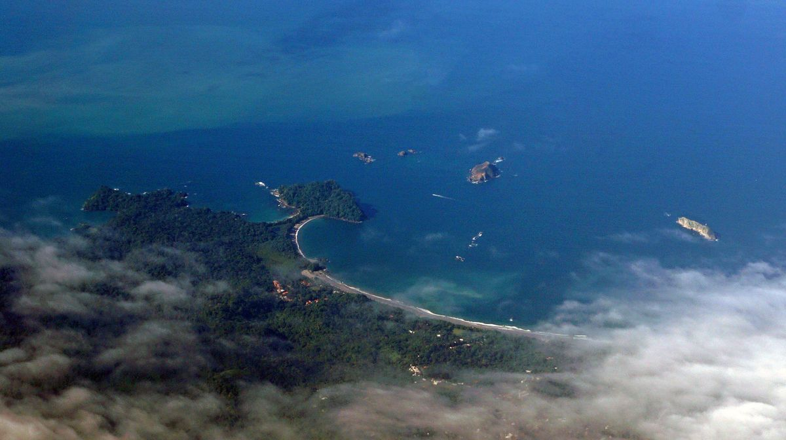

Inicio / Manuel Antonio

Parque nacional y playa
Manuel Antonio
Selva y playa a la vez: el parque nacional con sus monos y perezosos, atardeceres en Espadilla y una excursión a Uvita a ver ballenas.
25 - 29 agosto · Iglú Beach Lodge
Diario del destino
Actividades
Mar 25 agosto · En ruta
Cocodrilos en el Río Tárcoles
Parada en el camino hacia Manuel Antonio para ver los grandes cocodrilos del río Tárcoles …
Mié 26 agosto · 08:00
Tour de manglares en bote
Recogida en el hotel a las 08:00 para un recorrido en bote por los manglares, observando a…
Jue 27 agosto · 07:00
Parque Nacional Manuel Antonio
Visita guiada al parque nacional: fauna y playas dentro del parque. Tarde libre de playa.
Vie 28 agosto · 07:00
Avistamiento de ballenas en Uvita
Excursión en barco hasta Uvita para el avistamiento de ballenas. Tarde de playa y despedid…